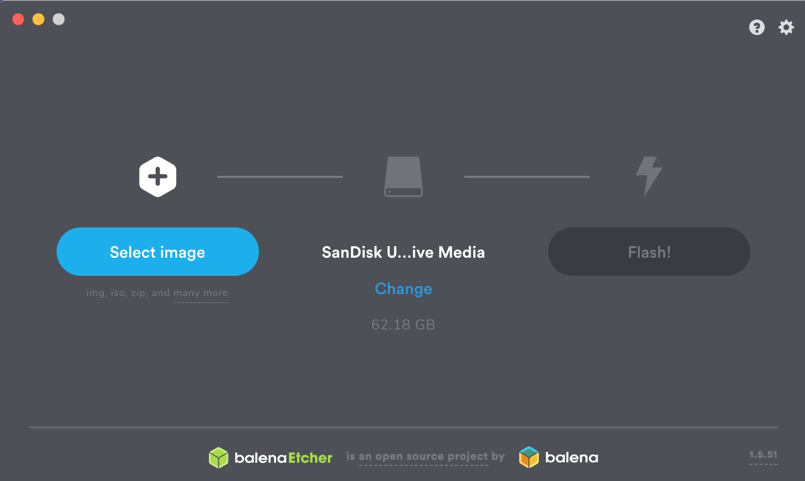

Always use Tor with an anonymous email when signing up with the VPN provider and only purchase with untraceable crypto. You will learn this in Chapter 7 and Chapter 9.
Virtual Machines (VM)
I recommend doing anything illegal/questionable in the Whonix-Workstation VM saved on an encrypted USB. If you use a VM then in order for you to be compromised or leak your IP an exploit would be needed for Tails, Kali, Tor Browser, Whonix, etc.
AND
an exploit would be required to get out of the Virtual Machine (VMWare or VirtualBox) and onto your host machine. However, since you have GlassWire, opensnitch, or Littlesnitch installed you're now able to block an unknown outgoing connection from an unknown process or known process.
If you have done all the above then an exploit would also be needed to compromise GlassWire, opensnitch, or LittleSnitch
AND
an exploit is needed for your host machine (Windows, macOS, Linux) to compromise a trusted application which then makes an outgoing connection
AND
you allow the outgoing connecting since you're running GlassWire, opensnitch, or LittleSnitch and captured the outgoing request.
Look at all that shit that needs to take place for you to be compromised. There would be multiple 0-day exploits required in order to compromise you. Do you know how much time and money it would take to develop all those exploits?! Do you think that you're a big enough target that they're going to reveal they have all these exploits just to capture you?! They're going to use them on much bigger fucking fish then you're drug dealing, hacking, frauding, carder ass. They're going after the true evil mother fuckers out there not you.
If you're booting directly from USB (Tails, etc.) only (1) exploit would be needed to leak your IP or get compromised. Did you download a copy that has been compromised? Is this really out of the reality of possibilities?! If you're using your host machine and an exploit is out for whatever application you have on that OS it only takes (1) exploit to phone home back to the C&C for the police. Doing everything in a VM makes it much harder to leak your IP and be compromised. Use VMs! If they're going to catch you let them fucking work for it man. Encrypt your HD, USBs, VM, etc..
When you're done with this course you'll come to realize people are caught by making a few mistakes and being captured with their laptop open and running. It's all about them finding your geographical location and this is what we're going to prevent from happening.
Using a virtual machine (VM) on your host machine
Pros
If you're using Tails, Whonix, or whatever and Tor (The Tor Browser) is compromised then the exploit is isolated to the VM. A 0-day exploit would be needed for Tor Browser along with whatever virtualization software you're using (VirtualBox or VMWare) and then your host machine OS. Chance of this and chance of this happening on you? How big of a fish are you? Regardless, multiple exploits would be required in order to compromise you.
Using your host machine for familiarity.
Applications can easily be installed.
Using your host machine for other purposes during your dark web activities (games, movies, etc.).
Using whatever encryption methods available on your host to encrypt your HD (BitLocker, FireVault, LUKS, etc..)
Having your VMs on an encrypted USB or folder for easy hiding and usage.
Cons
Relying on the VM to isolate any mistakes/malware that infects you (being compromised would require a 0-day in Tor, Tor browser, along with whatever virtualization software you're using (VirtualBox or VMWare).
Having your VMs on your HD incriminating you.
Having your VMs on USBs incriminating you.
Leaving digital footprints you didn't realize you left behind on your host machine which could lead investigators/police to USBs, encrypted containers, and a whole digital forensics team wet dream.
Pros and cons of booting from a USB (Tails OS, Kali, etc.)
Pros
Everything should be saved to USB so there's no incriminating evidence on your host machine or any digital footprint to be overly worried about.
Can easily hide USB, micro USB, etc. anywhere so if your door gets blasted down they have to find the USBs.
USBs can be encrypted easily.
Tails OS can be setup with persistence as an encrypted folder to store everything for your activities (passwords, emails, crypto wallets, PGP keys, etc.).
Tails wipes everything on shutdown and erases any digital footprint.
Easy plug and play anonymity OS.
Cons
Having Tails on a USB incriminating you.
Preference on using Windows, macOS, or Linux instead of Tails OS, Kali OS, etc. as your main OS.
Booting from a USB can be slowish and annoying.
Police and digital forensics can still tell there's a persistent folder installed and know something is encrypted in the Tails OS. The Tails OS website warns of this as well.
Tails is not meant for hacking.
OK let's say shit has hit the fan and you're arrested. It doesn't matter how you got arrested the point is your arrested and the police have your laptop.
Police will be able to determine:
A) That your hard drive (HD) is encrypted and demand the passphrase to unlock it.
B) See that you have an encrypted folder on your HD and demand the passphrase to unlock it.
C) Find your USBs that are encrypted and demand the passphrase to unlock it.
D) Determine that you have Tails installed on a USB and be able to see an encrypted persistent folder on it and demand the passphrase to unlock it.
E) Have all your shit.
The Tails OS website states "The encrypted persistent storage is not hidden. An attacker in possession of the USB stick can know whether it has an encrypted persistent storage. Take into consideration that you can be forced or tricked to give out its passphrase.".
An "attacker" meaning the police of course.
When it comes down to it you don't want law enforcement (LE) to have your laptop at any point AND you want to have everything encrypted should they obtain your laptop.
We now know that having Tails on a USB stick with persistence installed or encrypting the VM on your HD presents the same problem. Both would show that there are encrypted containers on the HD or USB through computer forensics. The police would demand the passphrases to open it sealing your fate or you'd be charged with not revealing your passwords. Charges for not revealing your passwords vary from country to country.
To reiterate, I recommend using Windows, macOS, or whatever you're comfortable with as your host machine while using your VMs for anything illegal or dark web related and having a VPN on your host machine. Remember, the number of exploits that are be needed to expose your IP or compromise your computer are a lot with that setup. Those type of exploits are hard to come by and are of high monetary value. In order for you to be compromised or have your IP leaked means that an exploit would be needed for the Tor Browser, then VirtualBox/VMWare, then another exploit for Windows, macOS, or whatever you're using. In today's day and age exploits of that nature are noticed immediately and cyber security researchers are all over that. Multiple exploits will be required in order to compromise you and your computer. Just that alone gives you more and more barriers in being compromised.
Whereas if you're booting form Tails off a USB, or any other OS, or using your host machine directly then (1) exploit would be needed to expose your IP or compromise your system. This is why I always recommend using a VM for anything questionable as the chances of being compromised are reduced significantly and by adding the other items taught in this course you'll see why this setup is so much more robust. I'm not saying it's impossible but you're defiantly putting up more barriers to prevent anything from happening to your host machine and isolating potential hostile environments in a VM protecting yourself from being fucked.
If you want to download Tails OS it's super easy. I won't go into too much details as their website literally walks you through this step by step. If you want to check out Tails then go to:
https://tails.boum.org/install/index.en.html
If you want to install Tails onto a USB select your OS and then click on "Install from Windows" or "Install from MACOS" and literally follow the steps. Once you have downloaded the ISO you'll need to install it onto a USB. Tails recommends the program needed to install the ISO onto USB for you. Plug and play! Easy!
If you just want Tails on a USB then download the ISO and get a high capacity storage USB preferably with 8GB capacity or more.
Download Etcher to install ISOs as an OS on USB:
https://www.balena.io/etcher
Once Etcher is installed plug in your USB and click on "Select image", then select the Tails ISO file, and click "Flash".

If you want to install any other OS (Kali, Ubuntu, etc.) onto USB then just download the ISO and use Etcher to install it onto USB.
Once installed onto a USB you will need to tell your computer to boot from it. You'll need to go into your BIOS settings and tell your computer to boot from the USB when starting up. Each OS is slightly different on how to access your BIOS and boot directly from USB.
Click to Read - Learn how to boot from USB
Virtual Private Servers (VPS)
Virtual Private Servers (VPS) are another key aspect in remaining anonymous while hacking. These "virtual" servers are virtual machines rented either on dedicated or shared hosting provider usually from a Internet hosting service provider or third party provider. It's usually recommended to seek out providers that originate in countries that do not cooperate with the country you reside in. The benefit to using VPS's is you're able to log into them over Tor through SSH and can launch a hack from the VPS. Any trace or investigation will lead back to the VPS IP you've rented and since you've logged in through Tor and taken the proper steps to keep yourself anonymous you should have little to worry about. Another benefit of using a VPS to launch your attacks from is that some scripts, programs, and techniques can take hours, days, if not weeks to complete. It's nice to log into a VPS and launch the attack and check back in a few days when it's completed instead of sitting by your computer waiting for it to finish. Think about the steps you've taken to hinder an investigation just by using a VPS logging in over Tor. Ideally you're on a public Wi-Fi or hacked Wi-Fi network connecting to a VPS over Tor launching your attacks from the VPS. You could even get a VPN or route everything through Tor on your VPS. You think you're going to get tracked? You're good.
It should be noted you should never ever assume your VPS is secure due to the fact that the provider can always see everything on it. They can image your VPS, sniff traffic, and store the image to go through all your information at a later date. You should only be using such things for attacks and should not be storing valuable information on them. A VPS can be configured for the majority of operating systems out there and are reasonably priced between $5-40 USD/month which can be acquired through Bitcoin or pre-paid methods. As you progress one day you can use the servers you've hacked for the same purpose but for now purchasing a VPS with crypto is a good way to get started and feel comfortable you're not being tracked to your location.
Honestly sometimes using your own VPS with the proper specs to launch an attack is better than acquiring a hacked server. Hacked servers can be a wish wash of things with other hackers already have compromised them, monitored by others, a honeypot, or they have detected a breach and have wiped your access. This isn't good. No VPS provider is recommended but whatever VPS provider you decide to go with ensure it meets the following criteria:
Be able to pay with Bitcoin or other forms of anonymous payment (pre-paid VISA, AMEX, etc.)
Can access the provider website over Tor.
Can login over Tor.
Has relatively good customer service for restarting your VPS should you cause problems (you will)
You should research VPS providers that accept Bitcoin or other "anonymous" forms of payment and find the cheapest one to try out. Once you've found one purchase a plan that is the shortest and cheapest with an installation of Ubuntu (or your flavor of Linux). Use fake details but keep note of all the details you've used to register with as you may need them again should you forget your password, logins, need to restart the server, etc. It's best to see which IP you're using while using Tor and research a company in that area to use the details when signing up for things. It'll help bypass some of their online fraud detections.
For example, I'm using Tor and I would check what my IP is at https://whatismyip.com or a similar website. In this example my Tor exit IP is located in Mexico. Therefore, I would look for companies in Mexico and use their addresses when registering online to avoid any problems. Each VPS provider is different but why chance it. This way a connection from Mexico is registering on their website with a Mexican address. Use real addresses that are associated to the geographical area that your IP is at the time.
Google Keyword: Bitcoin payment VPS, VPS Bitcoin, VPS Bitcoin payment, etc.
Remember pick providers that you know are in direct conflict with your country and know they will not cooperate with one another easily or in a timely manner.
Once you've completed your purchase it may take a few hours to have the VPS setup and you should either receive your login details at the time of purchase or e-mailed to you afterwards. Once you've received your credentials to the server you will log in via SSH over Tor. Do not log into the VPS without SSH over Tor or risk anything that would reveal your IP to the VPS provider. Don't do this. Use SSH over Tor when connecting to the VPS.
If you're using Whonix then you can simply SSH into your VPS over Tor without any worries but for the people who want to use their host OS you would need to run the Tor standalone first and then connect to your VPS with the right proxy settings enabled.
Below is the information to ensure everything is routed through Tor if you choose not to do it through Whonix but instead on your host OS (Windows, macOS, etc.).
To SSH into your VPS you'll need to run the Tor standalone file first.
Go to the directory where the Tor Browser has been downloaded into:
Windows (from the command line)
cd Tor Browser\Browser\TorBrowser\Tor
tor.exe
Linux (Ubuntu, Kali, etc.)
cd tor-browser_en-US/Browser/TorBrowser/Tor
./tor
macOS
cd /Tor\ Browser.app/Contents/MacOS/Tor
./tor.real
This will start the Tor stand alone and make a connection to the Tor network through the default port 9050. You can now re-direct applications to 127.0.0.1:9050 to funnel them through Tor.
If you're using Windows you will need to download and install Putty and configure it to use a proxy for 127.0.0.1 Port: 9050.
The example below is meant for macOS and Linux based operating systems.
Open a new terminal window while keeping the Tor standalone running and connect to your VPS.
Paste the following command into terminal changing the
USERNAME
and
VPS_IP
to match the credentials given to you by the VPS provider
ssh -o "ProxyCommand nc -X 5 -x 127.0.0.1:9050 %h %p" USERNAME@VPS_IP
This command uses SSH over Tor to connect to your VPS. Why is this important? For reasons talked about below.
You launch hacks from the VPS.
Police are notified of the cyber-attack.
Police track the IP to the VPS you purchased anonymously with Bitcoin.
From there they get a warrant to the actual server and see you connected into the VPS by a different IP.
That IP of course is a Tor exit node.
Once logged into your VPS always remember to keep it updated and install the appropriately upgrades needed. In general' these commands will keep your bash history from being spied on:
unset HISTFILE
echo 'set +o history' >> /etc/profile
echo 'set +o history' >> ~/.bashrc
export HISTFILE=/dev/null
unset HISTFILE = Doesn't keep track of bash history
echo 'set +o history' >> /etc/profile = Ensures there's no bash history stored
echo 'set +o history' >> ~/.bashrc = Ensures there's no bash history stored
You can install any programs on the VPS such as scripts, brute forcing programs, nmap, Metasploit,, and other things that you will be needed for your madness. Any program that runs on Kali can be installed on the VPS for launching attacks but this course is not meant to tell you what to install but rather give you the basics that you will need to remain as stealthy as possible when launching your attacks. For example, I like using VPS's for setting up Metasploit listeners, Empire listeners, BeEF, etc. and leaving them running so I can check back at my leisure.
Remote Desktop Protocol (RDP)
Remote Desktop Protocol (RDP) are essential for using a Windows machine on a VPS. Again, it's best to use a public WiFi, and use VPN/Tor to connect to your RDP. From there you can utilize your Windows machine as another server to launch your attacks from depending on which programs you decide to use (APPscan, Netspark, Acunetix, etc.). Always follow the same VPN/VPS rules when purchasing a RDP from a RDP provider.
Virtual Private Network (VPN)
Using a VPN or your host machine is essential when conducting your dark web activities which you can also apply to your VM, VPS, and RDP machines. Let's assume your actions are being logged while you're connected to a Wi-Fi network either by the feds or at the ISP level. Anything that is sent over the network that's not encrypted will be able to viewed in cleartext like a book. Going to HTTPS will encrypt your communications but will still show that you connected to that website or that you're connecting to Tor.
The VPN will encrypt your communications from your computer/device to the internet which means all your connections are going to your VPN provider and nothing else.
Not using a VPN will show that you're connecting to multiple websites, IP's, or a Tor entry node whereas using a VPN would only show you connecting to (1) IP. That IP being your VPN provider and all data encrypted.
There's no recommendation on which VPN provider to use but ensure you're registering with an anonymous email and paying in anonymous crypto. Use well know providers that accept crypto such as NordVPN, AirVPn, and many others. A Google search away my friends.
Click to continue to Chapter 7